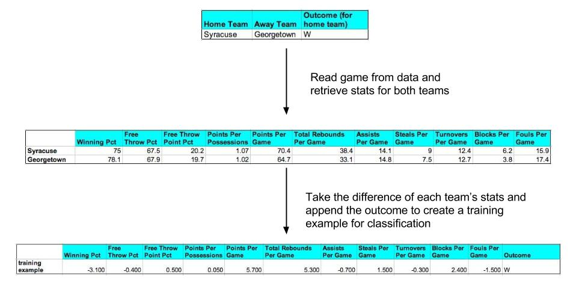
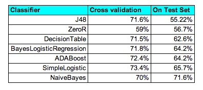
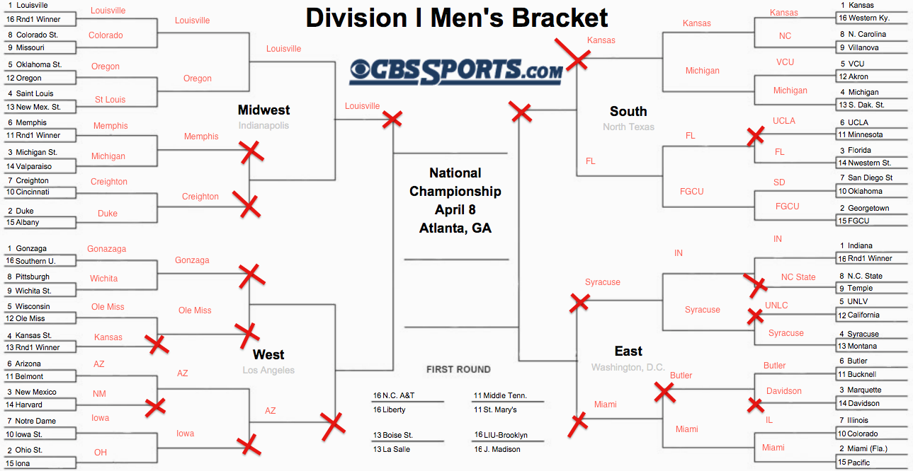

March Madness is a NCAA Division I Basketball tournament that was founded in 1939 and has been played annually since. The tournament traditionally runs from the middle of March to the end of April and features the top 68 teams from around the country.
Filling out a March Madness bracket has been somewhat of an American tradition, with a history of high offers for anyone who can fill out a perfect bracket. In 2012, Fox Sports offered $1 million to anyone who could do it, and for this upcoming season, Warren Buffett offered $1 billion. Sadly, there has been no documented case of a perfect bracket in the history of the tournament.
Our goal for this project is to accurately predict a March Madness bracket for the upcoming 2014 tournament. We will use a number of machine learning classifier models and attempt to predict the winning teams by identifying the characteristics that determine a team’s success in the tournament.
To construct our bracket, we will ask the following questions in our experiments:
Our dataset consists of information from Statsheet’s NCAAB site for the 2012-2013 season. The set contains all 351 NCAAB D1 teams, their conference schedule games (a total of 3207 games), and their season long statistics (54 for each team). The team statistics are a combination of binary, continuous and discrete variables that we are using as a feature set to represent each individual team. A sample of the types of features that we collected include but are not limited to:
In order to conduct our experiments, we needed to create instances representing the games that occurred from the data that we collected for the 2012-2013 season. We queried our data to find the season statistics for each team and took the difference of the stats between the respective teams (home team stats - away team stats) before appending the outcome of the game to it. This gave us a numerical representation of a game that we could use as a training example to feed into a classifier model.

Figure 1. Outline of how we constructed our training examples (not all of our features are included in this diagram).
To test the accuracy of our models, we used the games from the 2012-2013 March Madness tournament and generated test instances following the same method as with the training examples.

Table 1. The different classifiers we tested and their results.
After trying different models, the Naive Bayes classifier had the best percentage on 2013 March Madness tournament, predicting 71.6% of the games correctly. Naive Bayes is an optimal choice for our classifier not only because it had the best percentage, but because all of our features are numeric, the nature of how Naive Bayes is calculated synchronizes with our data.

Figure 2. How our predicted outcomes performed against the actual 2013 tournament.
Although 71.6% isn’t a bad percentage for classifiers, it probably won’t be good enough to predict 100% accuracy for a March Madness bracket. After filling out the 2013 bracket, we can see some flaws in our predictor but some merit as well. Our classifier missed some "obvious" calls (higher ranked team vs lower ranked) but performed well in some areas (predicted a few upsets).
For future work, we should include some type of measure for how difficult a conference is to weight statistics accordingly. Additionally, if we could include player statistics also, this would probably create better accuracy, as player matchups in basketball are very important.